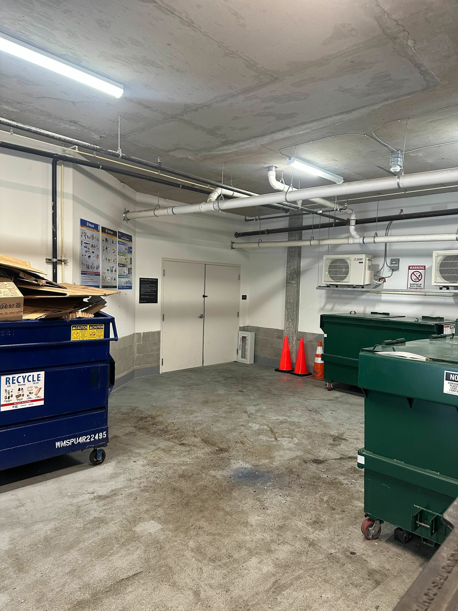
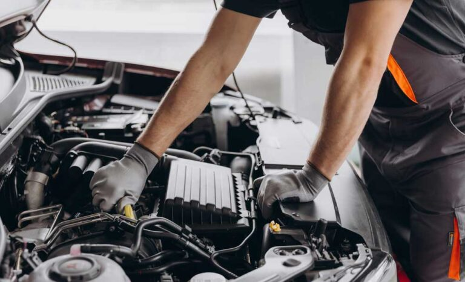

Intervju med Carlos
Det började när jag var barn. Min pappa hade flera bilar som han höll på med i sitt garage. Jag brukade stå bredvid och titta när han mekade. Efter ett tag började jag hjälpa honom med små saker, som att hämta verktyg eller torka av delar. Det var då mitt intresse för bilar föddes.
Jag tycker mest om äldre bilmodeller. De har mer personlighet, tycker jag. Just nu har jag en sportbil från 70‑talet som jag arbetar med på helgerna. Det finns bara några få exemplar av den modellen i Sverige, så det känns speciellt att få ta hand om den.

Det roligaste med att reparera bilar är att se hur en bil som varit trasig länge får ett nytt liv. När jag lyckas laga något som varit svårt, känner jag mig nästan som en läkare som gör sina patienter friska. Det ger mig mycket glädje.
Jag kör inte mina bilar så ofta, men ibland händer det. I somras tog jag en tur till Göteborg tillsammans med några vänner. Vi var lite nervösa om bilen skulle klara hela resan, men den fungerade perfekt hela vägen.